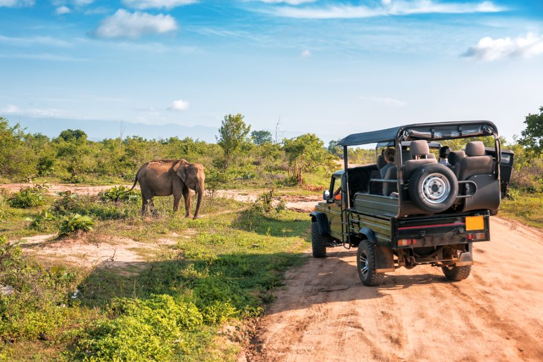

Experience guaranteed wild elephant sightings in an open, sprawling landscape that feels more like an African savanna than any other park in Sri Lanka.
Udawalawe National Park is famous for being the best park in Sri Lanka to see wild Asian elephants year-round. It was created in 1972 as a sanctuary for wildlife displaced by the construction of the Udawalawe Reservoir. The park's architecture of open grasslands and thorn scrub makes it incredibly easy to spot large herds as they move towards the reservoir's edge.
While elephants are the main attraction, Udawalawe is also a fantastic location for bird watching, especially for birds of prey and waterbirds around the reservoir. You can also spot water buffalo, crocodiles, spotted deer, and the occasional leopard. The sense of openness and the scale of the herds make an Udawalawe safari a truly unforgettable wildlife adventure.
Back to Udawalawe Hub